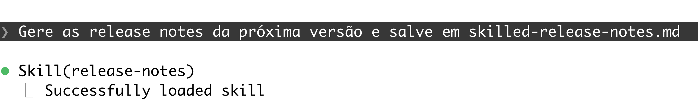

Skills e Especificação de Agentes
Sumário
Ao final dessa aula, o aluno deve ser capaz de explicar e especificar skills e agentes, além de diferenciar os dois.
Contexto
Quando (e como) eu ensino algo ao agente? Quando eu crio outro agente?
Nós acabamos de passar por prompting e engenharia de contexto. Ali aprendemos e utilizamos algumas técnicas para direcionar o agente a fazer o que queremos e como queremos. Além disso, vimos que muitas vezes a quantidade de informação relevante para o trabalho pode não caber na janela de contexto, por isso, vimos que é importante escrever essa informação em algum documento (tipicamente markdown) para ser utilizado em momento oportuno.
Até aqui você escreveu, com ajuda dele, documentos markdown para o agente, como sessões de entendimento (grill-me) e planos de implementação (to-spec). Em todos, quem decidia quando o documento seria usado era você. Hoje vamos tratar de dois arquivos em que essa decisão muda de lugar. Os dois são markdown com frontmatter, e por isso parecem a mesma coisa, mas não são.
O primeiro: skill
Setup:
- Vamos trabalhar em cima do projeto humanize (link).
- Vamos usar uma skill chamada release-notes, que já criei e está aqui.
"Gere as release notes da próxima versão."
Faltou algo. Ou muito, né? Precisamos definir muito mais detalhes para aumentar a chance do resultado gerado ser o que esperamos.
O modelo sabe escrever release notes. Não sabe escrever da forma como as regras deste projeto requer.
Podemos colocar isso no prompt toda vez. Mas isso é algo que vai ser necessário toda vez que precisarmos gerar release notes. Já vimos que há um movimento natural de elementos do prompt para arquivos markdown. Onde podemos colocar esses detalhes? Skills.
Podemos colocar também no agents.md. Mas isso é assunto para depois. Por que não agents.md agora? Vale a pena só citar que o agents.md é carregado a cada sessão independente de pedido. A skill é sob demanda da tarefa.
O que é? Skill é conhecimento descrito de maneira estruturada em um markdown para ser reutilizado. Uma pessoa possui várias habilidades, mas não usa todas ao mesmo tempo. Em determinados contextos, eu toco cavaquinho, em outros, leciono essa disciplina, em outros faço pão. São habilidades que eu tenho e que eu as uso a depender do contexto.
Assim funciona para um agente. Ele pode ter habilidades de revisor de código, de testador, de especialista em cloud entre outras, mas só as usa quando preciso e dentro do contexto que for preciso. Isso é importante entender sobre skill: é carregada dinamicamente (ou explicitamente pelo usuário com @) para uma determinada tarefa.
Se eu pedir para o agente descrito acima revisar alguma coisa, ele muito provavelmente vai carregar a skill que eu escrevi para revisar do jeito que eu especifiquei.
Lembra do grill-me? Aquilo é uma skill. Dá uma olhada no markdown dela aqui.
Os problemas
Em termos simples, SKILL resolve dois grandes problemas: falta de alinhamento e duplicação de trabalho.
Falta de alinhamento
<demonstração prática em sala de aula>
“Gere as release notes da próxima versão e salve o conteúdo em no-skill-release-notes.md”
Vamos ver o trace.
Searched for 1 pattern, ran 3 shell commands
gh is authenticated. Let me check if there's already a draft release on GitHub for the next version, and pull PR labels for the commits since 4.16.0.
Searched for 1 pattern, ran 5 shell commands
Based on the commits merged since the 4.16.0 tag (2026-06-30), here are the release notes for the next version, 4.17.0 (minor bump, since Added/Changed-labelled PRs are included per release-drafter.yml's semver rules):
Vamos olhar o que foi gerado em no-skill-release-notes.md.
Agora vamos ver e usar a skill que criei para ver o resultado.
- Vamos ver onde fica e o que tem no diretório da skill.
- Vamos executar o mesmo pedido agora.
- Note a skill sendo carregada automaticamente. O agente entendeu que para essa tarefa, deve usar a skill. Não precisei chamar explicitamente.
- Note que as ações do modelo são direcionadas pelo que está descrito na skill.

Diferença com e sem skill (alinhamento!)
Vamos ver o que o próprio modelo diz:
“draft-release-note.md parece ser a saída real do bot release-drafter do GitHub, que categoriza PRs pelas labels atribuídas nelas (ex: label “bug” → Fixed), não pelo texto do assunto do commit. Meu arquivo seguiu estritamente as regras textuais de formato.md do skill, que mapeia por palavras do assunto (“Return”, “Use”, “Support” → Changed/Added) e exclui mudanças só de doctest.
Ou seja: a divergência não é erro de um lado, são critérios diferentes (labels do GitHub vs. heurística por texto do commit). Quer que eu ajuste o meu rascunho para seguir as labels reais das PRs (preciso consultar o GitHub), ou mantenho conforme a regra do skill?”
Reuso
Skill é conhecimento escrito para não termos que escrever no prompt toda vez que precisarmos dele.
Formato
./release-notes/formato.md
./release-notes/scripts/commits.py
./release-notes/SKILL.md
A língua-franca é markdown, mas sem formato pré-definido.
Vamos ver algumas e discutir o que e como vale a pena descrever.
Conteúdo
1. Nome, descrição e ferramentas (allowed-tools) para o agente.
O agente usa isso para decidir se vai carregar a skill.
name: release-notes
description: Gera o rascunho das release notes da próxima versão a partir dos commits desde a última tag, no formato do projeto. Use quando o usuário pedir release notes, changelog ou notas da próxima versão.
2. Convenções e decisões.
Incluir decisões da equipe sobre formatos, exclusões, saídas etc. Não ensine o que ele já faz bem sozinho.
3. KISS.
Mantenha a concisão e simplicidade.
Use arquivos externos de apoio.
Mantenha coesão. Uma coisa é bem feita.
4. Inclua determinismo quando necessário.
Se houver algum passo que você quer garantir que aconteça e de forma determinística, use scripts.
5. Precisa mesmo de uma skill?
Meça com e sem a skill para ver o efeito.
6. Controle o agente.
Se ele não puder carregar a skill automaticamente, use disable-model-invocation: true.
O segundo: agentes
Você pode definir agentes especializados.
Quando carregados, possuem papel, ferramentas, modelo e contexto próprios.
O agente roda em uma janela separada e devolve só o resumo. Aqui está a diferença para a skill. A skill entra no contexto do agente que já está trabalhando, e o agente delegado trabalha no dele.
Onde? .claude/agents/
<demonstração em sala de aula>
Vamos analisar o release-auditor.md.
---
name: release-auditor
description: Confere um rascunho de release notes contra o
histórico de commits. Use depois de gerar as notas.
tools: Read, Grep, Glob
model: haiku
---
(corpo: o system prompt do agente)
Só name e description são obrigatórios. Existem outros campos (skills, maxTurns, permissionMode e etc.
O agente não vê a conversa. Ele recebe o corpo do arquivo, a mensagem de delegação que o agente principal escreve, as instruções do repositório e pouco mais. Tudo o que ele precisa saber tem de estar no corpo ou na mensagem.
O auditor só lê, então recebe Read, Grep, Glob. Se ele precisasse de Bash, restringir a comandos específicos não é possível pelo campo tools: listar Bash com um especificador em disallowedTools remove a ferramenta inteira. Por isso desenhamos o script da skill para deixar o histórico em arquivo.
O campo skills do agente injeta o conteúdo completo de cada skill no início da execução.
Diretrizes para Especificar Agentes
- Uma responsabilidade por agente.
- Ferramentas mínimas.
- Descrição escrita para a decisão de delegar.
- Corpo escrito para quem não viu a conversa.
- Formato de retorno definido.
- Modelo escolhido pelo trabalho.
- Arquivo versionado no repositório, para o time melhorar junto.
Paralelo
| Skill | Agente | |
|---|---|---|
| Onde entra | Contexto principal, sob demanda | Contexto próprio |
| O que carrega | Instruções | Papel, ferramentas, modelo |
| Quem executa | O agente que já trabalha | Outra instância |
| O que volta | Nada separado, tudo na conversa | Um resumo |
| Custo | Ocupa o contexto depois de carregada | Começa do zero e gasta tokens próprios |
Quando eu ensino algo ao agente e quando eu crio outro agente?
Ensino por skill quando falta conhecimento e o trabalho pode acontecer na conversa. Crio outro agente quando o problema é volume, restrição ou isolamento.
Agente cria unidade separada de trabalho.
Algumas boas referências
Para agentes: awesome agents e criando agentes no opencode.
Para skills:
- @mattpocockuk
- @poteto
- @dexhorthy
- @emilkowalski